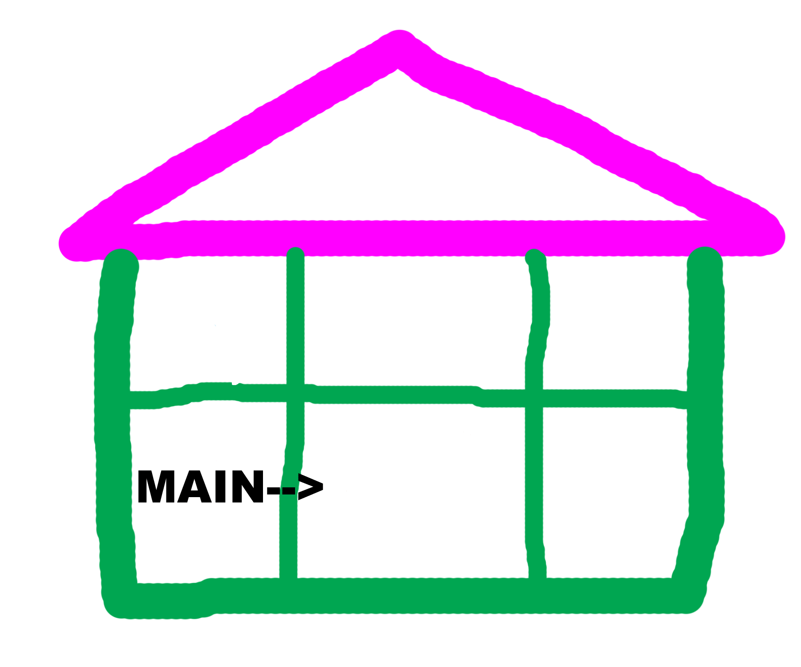

Sample code:
public class MyProgram{
public static void main(String[] args){
(...content of main method)
}
}
The second line of our simple code "public static void main(String[] args)" is the main method. Every program has to have a main method. It is a start point that computer will read the codes from program. Similar to class, main method also has { } signs to hold on its
contents.
This is a complete main method in Java:
public static void main(String[] args){
}
Inside main method, we start to call statements and other functions which are the details we would like computer to do for us. We see the main method as a doorway of a house , because from here, our program is starting everything in details.
